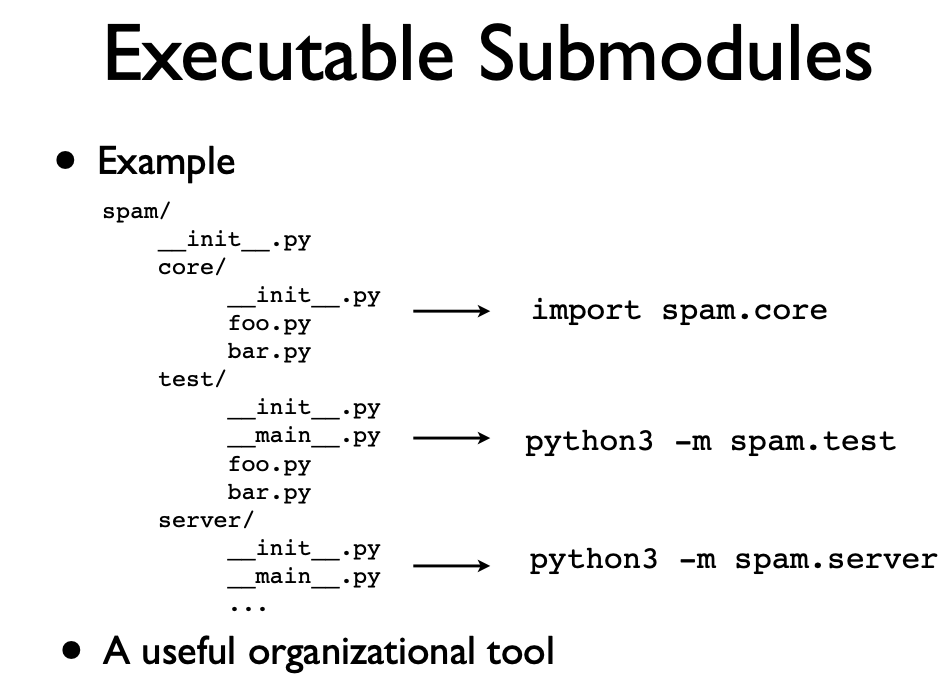
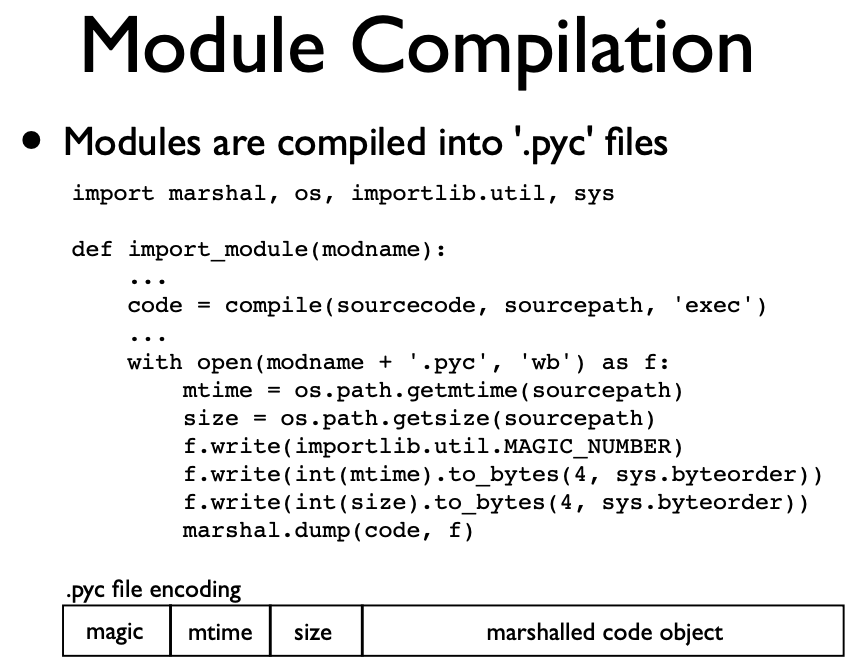

sys.path.append("/Users/imad/Desktop/")
Python’s simplicity and versatility are largely attributed to its extensive ecosystem of modules and packages. These essential components enable developers to write clean, reusable, and efficient code, whether for simple scripts or complex applications.
This article aims to deepen our understanding of Python’s modules and packages and the machinery involved, helping me become a more effective Python programmer. We will explore their structure and functionality, covering everything from the basics of importing to creating custom packages and managing dependencies. By unpacking the underlying machinery of how modules/packages get imported and what they really are, we’ll gain insights that will enhance our coding practices and project organization.
Introduction
- Python has only one type of module object regardless of the language the module was implemented it (C/Python/…)
- Package provides a naming hierarchy to organize modules (same analogy to directory in Unix file system):
- All packages are modules but not all modules are packages
- A module is a package that has
__path__ - A package can include subpackages (sub-directories)
- There are two types of packages:
- Regular packages are directories that have
__init__.py. When importing a package/subpackage -> implicitly executes all__init__.pyfiles on the path and bound objects to names in the package’s namespace- When import machinery is looking for the package, it stops once it finds it
- Namespace packages are directories that don’t have
__init__.py- When import machinery is looking for the package, it does not stop when it finds it and assuming there may be a regular package in some other paths in
sys.pathbut keep a record of all namespace packages it found during the search. If it finds a regular package with that name -> discard all namespace packages it found and import the regular package. If it doesn’t find any regular package with that name -> Use all the namespace packages it found during the search and combine their paths innamespace_pathso when we try to import subpackage or modules, it checks all the paths in the namespace_path (which is a list) - There can be multiple packages of the same name (under different directories) -> They are all combined together and the
namespace_pathlist would have the path for all of them. Therefore, the same package can be used to refer to completely different modules in different directories - Python first scans the whole sys.path before deciding that the package is a namespace -> If any name is found with
__init__.pyin it, it will give this priority and don’t continue.
- When import machinery is looking for the package, it does not stop when it finds it and assuming there may be a regular package in some other paths in
- Regular packages are directories that have
- When importing subpackages such as
foo.bar.baz, Python first imports foo, then foo.bar, then foo.bar.baz- Each of these will be cached in
sys.modules
- Each of these will be cached in
__init__.pymakes a directory a python package- We can use it to import useful stuff from different modules/subpackages so it can be available to user
- When importing an object, it has
__module__attribute which determines the global environment for the object - We can define
__all__in__init__as concatenation of all__all__in modules- Example:
__all__ = foo.__all__ + bar.__all__BUT we need to either first import foo and bar or import anything from them so they can be defined such asfrom .foo import *ORfrom .foo import y
- Example:
__init__can be used to also initialize things and maybe monkeypatch some other modules
- Each package has
__path__attribute that helps when searching for subpackages. This will be given to path finder when loading subpackages- It is a list; similar to
sys.pathso we can change it. But it is not recommended - Example:
import math; math.__path__.append(~/Documents")
- It is a list; similar to
- Relative import is preferred to absolute imports inside packages to avoid having issues if the package name is changed
- Packages get loaded once even if we import it multiple times
- We can in theory upgrade a package in the cache like this:
sys.modules[new_name] = package_name
- If we use
python -m package.module, it executes module as the main program and relative imports works. Otherwise, relative imports won’t work.mstands for module
- The
__main__module is a special case relative to Python’s import system. The__main__module is directly initialized at interpreter startup, much likesysandbuiltins. The manner in which__main__is initialized depends on the flags and other options with which the interpreter is invoked __main__.pydesignates main for a package/subpackage and also allows package directory to be executable -> explicitly marks the entry point. Examples:python packagewould look for__main__.pyto execute itpython -m package.subpackagewould look for__main__.pyinside package/subpackage to execute__package__is set so the relative imports still work- A lot of programming tools utilize this to their own benefit:
python -m profile script.yORpython -m pdb script.py - NOTE THAT
__init__.pyfiles on the path will still be executed
- Depending on how
__main__is initialized,__main__.__spec__gets set appropriately or to None.- When Python is started with the -m option,
__spec__is set to the module spec of the corresponding module or package.__spec__is also populated when the__main__module is loaded as part of executing a directory, zipfile or other sys.path entry. - Otherwise, it will be set to None
- When Python is started with the -m option,

Sys.path
importlibhas a rich API to interact with import system. It is preferred over__import__()__import__Only does module search and creation without the name bindingimportDoes everything. Module search, creation, and name binding. It calls__import__under the hood.eggfiles are just directories or .zip files with extra metadata for package managerssys.pathis where python looks to search for a module/package (last place) that we try to import. It traverses it from start-to-end- It has the name of directorires, .zipfiles, .egg files
- first match wins
- If it can’t find it -> can not be imported
sys.prefixis where python is stored (os.py is the landmark) andsys.exec_prefixis where compiled binaries are stored (lib-dynload is the landmark)- With virtual environments -> each one has its own sys.prefix
- It is constructed from
sys.prefix,PYTHONHOME, andsite.py. SettingPYTHONHOMEwould overridesys.prefixandsys.exec_prefic - Python looks for its libraries starting from where it is and keep going up until the root of the file syetsm. It looks for
os.pyand use that location as a landmark python -Sskips site.pypython -vvto see what python tries to do with every statement- Setting PYTHONPATH to some directories will insert them into the beginning of sys.path. Example:
env PYTHONPATH="/Users/imad/Documents pythonto run python with documents inserted at the beginning of the sys.apth
site.pyappends the path to third-party libraries. This is where installed packages get stored. Example:/usr/local/lib/python3.4/site-packages
- Python now have builtin virtual environments that can create one using the
venvmodulepython -m venv env_namewill create new environment called env_name- This environment will include few directories such as include, lib, site-packages, bin and pyvenv.cfg
- This new environment has no third party libraries or any system wide libraries such as those in /usr/local
- All third libraries will be installed in site-packages directory
- Python binary will refer to the original Python installation when the environment was created
- We can use
source path_to_env_name/bin/activateto activate the environment.deactivateto deactivate it. Finally,rm -r path_to_env_nameorpyenv --rmif we create it using poetry
- Files with
.pthextension in site-packages directory get added to the sys.path. We can list directories in those files that will be added to sys.path for any new instance of Python- Package managers and other third-party packages use this kind of hack to add paths to the sys.path
- sitecustomize and usercustomize also can be used to add stuff to the sys.path
- Finally the current working directory will be added to the path (at the beginning)
Modules
- Modules are just objects of type ModuleType. They act like a dictionary that holds references to objects it holds;
module.__dict__- When importing a module, it executes the module from top to bottom before returning to the caller
- Module can be namespace, py file, execution environment for statements or container of global variables
- We can set/delete attributes.
module.x = 10is the same asmodule.__dict__['x'] = 10 - The dictionary has preset attributes such as
__path__,__loader__… - Main attributes:
__name__: # Module name__file__: # Associated source file (if any)__doc__: # Doc string__path__: # Package path. It is used to look for package subcomponents__package__: # The module’s__package__attribute must be set. Its value must be a string, but it can be the same value as its__name__. When the module is a package, its__package__value should be set to its__name__. When the module is not a package,__package__should be set to the empty string for top-level modules, or for submodules, to the parent package’s name.__spec__: # Module spec
- The main difference between modules and packages is that packages have
__path__and__package__defined (not None) sys.modulesserves as a cache for all imported modules/packages- It is a dictionary so we can delete/set keys
- If we delete a module, it will force Python to import it when we reimport it
- If we set module key to None -> result in
ModuleNotFoundError
- Even if we import one object from a module/package, the module/package will be cached in the
sys.modulesbut not available in the global name space - The module created during loading and passed to exec_module() may not be the one returned at the end of the import
- This can happen if the imported module set the
sys.modules[__name__]to some other module
- This can happen if the imported module set the
- The module’s attributes are set after creation and before execution
- Execution of the module is what populates the module’s
__dict__(namespace of the module). This is done by the loader - When a submodule is loaded using any mechanism, a binding is placed in the parent module’s namespace to the submodule object. For example, if we have a package called spam that has a submodule foo and it imports any of its objects like
from .foo import x, after importing spam, spam will have an attribute foo which is bound to the submodule -> We can now usespam.foo - Relative imports use leading dots. A single leading dot indicates a relative import, starting with the current package. Two or more leading dots indicate a relative import to the parent(s) of the current package, one level per dot after the first.
- Relative imports can only use this form of import:
from <> import <> - It can’t use
import .<>because this is not a valid expression
- Relative imports can only use this form of import:
- Absolute imports have to start from the top level package and go downward to refer to the module:
from package.subpackage importmodule- Not recommended because if we change the name of the package then we need to change all the import statements -> relative imports are more robust and don’t care about namings
- Process when importing a module/package (after locating it):
- First checks if it is cached. If not, continue
- It creates a ModuleType object with that name
- Cache the module in sys.modules
- Executes the source code inside the module (first prefixing it with .py and then assign
__file__)- In the case of the package/subpackage, it assign it the
__init__.pyfile - It also executes all the
__init__.pyon the path
- In the case of the package/subpackage, it assign it the
- Assign a variable to the module object
import sys, types
def import_module(modname):
# Check if it is in the cache first
if modname in sys.modules:
return sys.modules[modname]
sourcepath = modname + '.py'
with open(sourcepath, 'r') as f:
sourcecode = f.read()
mod = types.ModuleType(modname)
mod.__file__ = sourcepath
# Cache the module
sys.modules[modname] = mod
# Convert it to Python ByteCode
code = compile(sourcecode, sourcepath, 'exec')
# Execute the code in the module from top to bottom
# And update the state (globals) in the module's dictionary
exec(code, mod.__dict__)
# We return the cached one in case there is some patching inside the module
return sys.modules[modname]Module Compilation

- Python put a lock when importing a module until it is done so that we don’t have multiple threads trying to import the same module at the same time
__import__is the machinery behindimportstatement- We can use
importlib.import_module(module)which is the same thing as__import__importlib.import_module(spam)is the same asimport spamimportlib.import_module('.spam', __package__)is the same asfrom . import spam- We can track all imports as follows:
import builtins
def imp_mod(modname, *args, imp=__import__):
print(f"Importing {modname}")
return imp(modname, *args)
builtins.__import__ = imp_mod- Module Reloading:
- It is not a good idea to reload a module because it creates zombies. Basically Python doesn’t try to clean up the dictionary from the old module, but instead exec() the new state of the module using the old
module.__dict__. This means stuff from previous load may still exist and we end up having weird cases. This is how Python reloads a module:
code = open(module.__file__, 'rb').open() exec(code, module.__dict__)- Also, submodules that are loaded in the module/package don’t get reloaded. They still have their old version. Exampe: If module has
import pandas as pd, when reloading the module it doesn’t reload pandas. - Also, if we have instances that use the old version of the module and then we reload -> New instances of the same object (class) will refer to different code implementation than the instances created before the reload -> Even though they refer to the same class, instances will have different types
- It is not a good idea to reload a module because it creates zombies. Basically Python doesn’t try to clean up the dictionary from the old module, but instead exec() the new state of the module using the old
sys.pathis only the small part of the import machinery- Imports is actually controlled by
sys.meta_path- It is a list of importers
[_frozen_importlib.BuiltinImporter, _frozen_importlib.FrozenImporter, _frozen_importlib_external.PathFinder, <six._SixMetaPathImporter at 0x10c8769b0>, <pkg_resources.extern.VendorImporter at 0x10dbf9300>]- Python’s default sys.meta_path has three meta path finders, one that knows how to import built-in modules, one that knows how to import frozen modules, and one that knows how to import modules from an import path
- For every import statement, it goes from start-to-end to know if sys.meta_path knows how to install it
importlib.util as imp
def find_spec(modname):
for imp in sys.meta_path:
spec = imp.find_spec(modname)
if spec:
return spec
return NoneModuleSpec of a module is its metadata that the loader uses to load it. We can also use
importlib.util.find_spec()to get the module spec of any loaded package. If the package/module is not found -> returns None. Example of pandas module spec:ModuleSpec(name='pandas', loader=<_frozen_importlib_external.SourceFileLoader object at 0x10e609f90>, origin='/Users/imad/anaconda3/envs/python-exp/lib/python3.10/site-packages/pandas/__init__.py', submodule_search_locations=['/Users/imad/anaconda3/envs/python-exp/lib/python3.10/site-packages/pandas'])- Module Spec main info:
- spec.name : # Full module name
- spec.parent : # Enclosing package
- spec.submodule_search_locations : # Package path
- spec.has_location : # Has external location
- spec.origin : # Source file location
- spec.cached : # Cached location
- spec.loader : # Loader object
- We can use the
loaderfrom module spec to get the source code w/o importing it. They actually create the imported module:
module = spec.loader.create_module(spec) if not module: module = types.ModuleType(spec.name) module.__file__ = spec.origin module.__loader__ = spec.loader module.__package__ = spec.parent module.__path__ = spec.submodule_search_locations module.__spec__ = spec- We can create module from spec with
importlib.util.module_from_spec. This DOES NOT LOAD THE MODEL., it only creates it. To load the module, the module must be executed withspec.loader.exec_module(spec)and then cache itsys.modules[spec.name] module.exec_modulewill populate the__dict__of the module.
- Module Spec main info:
We can execute modules lazily on first access. Implementation example:
import types
class _Module(types.ModuleType):
pass
class _LazyModule(_Module):
def __init__(self, spec):
super().__init__(spec.name)
self.__file__ = spec.origin
self.__package__ = spec.parent
self.__loader__ = spec.loader
self.__path__ = spec.submodule_search_locations
self.__spec__ = spec
def __getattr__(self, name):
self.__class__ = _Module
self.__spec__.loader.exec_module(self)
assert sys.modules[self.__name__] == self
return getattr(self, name)import importlib.util, sys
def lazy_import(name):
# If already loaded, return the module
if name in sys.modules:
return sys.modules[name]
# Not loaded. Find the spec
spec = importlib.util.find_spec(name)
if not spec:
raise ImportError(f'No module {name:r}')
# Check for compatibility
if not hasattr(spec.loader, 'exec_module'):
raise ImportError('Not supported')
# Perform the lazy import
module = sys.modules[name] = _LazyModule(spec)
return module- Therefore, the module create/loading has been decoupled in recent versions of Python
- We can insert an importer to
sys.meta_paththat can change the behavior of imports- If it is in the beginning, it supercedes all other loaders and we can do crazy things
import sys class Watcher(object): @classmethod def find_spec(cls, name, path, target=None): print('Importing', name, path, target) return None sys.meta_path.insert(0, Watcher) - We can also use this idea to add some logic such as autoinstall packages that are not found using pip. We insert the installer at the end of
sys.meta_path
import sys
import subprocess
import importlib.util
class AutoInstall(object):
_loaded = set()
@classmethod
def find_spec(cls, name, path, target=None):
if path is None and name not in cls._loaded:
cls._loaded.add(name)
print("Installing", name)
try:
out = subprocess.check_output(
[sys.executable, '-m', 'pip', 'install', name])
return importlib.util.find_spec(name)
except Exception as! e:
print("Failed")
return None
sys.meta_path.append(AutoInstall)We can also import packages not found on the system from some other systems such as Redis
sys.path_hooksis responsible for the actual loading of the module/package depending on the path- Each entry in the
sys.pathis tested against a list of path hooks to assosiate a module finder with each path entry - Path finders are used to locate module and return module spec along with loader
- Path finders get cached in
sys.path_importer_cache
- Each entry in the
Both
loadersandfindershavefind_spec()that returns spec of module if they know how to find/load it. Otherwise, they returnNoneWhat happens during import:
modname = 'somemodulename'
for entry in sys.path:
finder = sys.path_importer_cache[entry]
if finder:
spec = finder.find_spec(modname)
if spec:
break
else:
raise ImportError('No such module')
...
# Load module from the spec
...Experiments
from pck.mod import Xpck.modX100from pck.test import Xpck.testsys.modules["pck"].__path___NamespacePath(['/Users/imad/Documents/python-materials/modules-and-packages/pck', '/Users/imad/Documents/python-materials/modules-and-packages/pck', '/Users/imad/Desktop/pck'])foo.__package__, foo.__path__AttributeError: module 'package.foo' has no attribute '__path__'globals()["foo"]<module 'package.foo' from '/Users/imad/Documents/python-materials/modules-and-packages/package/foo.py'>def f():
passfrom pandas import read_csvsys.path_hooks[zipimport.zipimporter,
<function _frozen_importlib_external.FileFinder.path_hook.<locals>.path_hook_for_FileFinder(path)>]list(sys.path_importer_cache.keys())[:10]['/Users/imad/anaconda3/envs/python-exp/lib/python310.zip',
'/Users/imad/anaconda3/envs/python-exp/lib/python3.10',
'/Users/imad/anaconda3/envs/python-exp/lib/python3.10/encodings',
'/Users/imad/anaconda3/envs/python-exp/lib/python3.10/importlib',
'/Users/imad/anaconda3/envs/python-exp/lib/python3.10/site-packages',
'/Users/imad/anaconda3/envs/python-exp/lib/python3.10/lib-dynload',
'/Users/imad/anaconda3/envs/python-exp/lib/python3.10/site-packages/PyYAML-6.0-py3.10-macosx-10.9-x86_64.egg',
'/Users/imad/Documents/python-materials/modules-and-packages',
'/Users/imad/anaconda3/envs/python-exp/lib/python3.10/site-packages/ipykernel',
'/Users/imad/anaconda3/envs/python-exp/lib/python3.10/json']from importlib.util import find_specm = find_spec("mod")
m.loader.get_source("mod")'y = 200\nprint(y)\n\nclass A:\n print("A")\n'import sys
sys.meta_path[_frozen_importlib.BuiltinImporter,
_frozen_importlib.FrozenImporter,
_frozen_importlib_external.PathFinder,
<six._SixMetaPathImporter at 0x10c8769b0>,
<pkg_resources.extern.VendorImporter at 0x10dbf9300>]import mod200
Aa = mod.A()from importlib import reloadreload(mod)200
A<module 'mod' from '/Users/imad/Documents/python-materials/modules-and-packages/mod.py'>b = mod.A()a.__class__, b.__class__, type(a) == type(b)(mod.A, mod.A, True)from importlib.util import find_specfind_spec("sys")ModuleSpec(name='sys', loader=<class '_frozen_importlib.BuiltinImporter'>, origin='built-in')find_spec("pandas")ModuleSpec(name='pandas', loader=<_frozen_importlib_external.SourceFileLoader object at 0x10e609f90>, origin='/Users/imad/anaconda3/envs/python-exp/lib/python3.10/site-packages/pandas/__init__.py', submodule_search_locations=['/Users/imad/anaconda3/envs/python-exp/lib/python3.10/site-packages/pandas'])import importlibimportlib.import_module()pd.__path__, pd.__name__, pd.__package__, pd.__file__, pd.__doc__(['/Users/imad/anaconda3/envs/python-exp/lib/python3.10/site-packages/pandas'],
'pandas',
'pandas',
'/Users/imad/anaconda3/envs/python-exp/lib/python3.10/site-packages/pandas/__init__.py',
'\npandas - a powerful data analysis and manipulation library for Python\n=====================================================================\n\n**pandas** is a Python package providing fast, flexible, and expressive data\nstructures designed to make working with "relational" or "labeled" data both\neasy and intuitive. It aims to be the fundamental high-level building block for\ndoing practical, **real world** data analysis in Python. Additionally, it has\nthe broader goal of becoming **the most powerful and flexible open source data\nanalysis / manipulation tool available in any language**. It is already well on\nits way toward this goal.\n\nMain Features\n-------------\nHere are just a few of the things that pandas does well:\n\n - Easy handling of missing data in floating point as well as non-floating\n point data.\n - Size mutability: columns can be inserted and deleted from DataFrame and\n higher dimensional objects\n - Automatic and explicit data alignment: objects can be explicitly aligned\n to a set of labels, or the user can simply ignore the labels and let\n `Series`, `DataFrame`, etc. automatically align the data for you in\n computations.\n - Powerful, flexible group by functionality to perform split-apply-combine\n operations on data sets, for both aggregating and transforming data.\n - Make it easy to convert ragged, differently-indexed data in other Python\n and NumPy data structures into DataFrame objects.\n - Intelligent label-based slicing, fancy indexing, and subsetting of large\n data sets.\n - Intuitive merging and joining data sets.\n - Flexible reshaping and pivoting of data sets.\n - Hierarchical labeling of axes (possible to have multiple labels per tick).\n - Robust IO tools for loading data from flat files (CSV and delimited),\n Excel files, databases, and saving/loading data from the ultrafast HDF5\n format.\n - Time series-specific functionality: date range generation and frequency\n conversion, moving window statistics, date shifting and lagging.\n')